Magic
Magic casts from staves, tomes and magic guns and runs on mana, so mana regeneration gear matters as much as damage.
Markers: † risky to get · C crowd control · + support · ≤ has upgrades · * tedious to get · ν needs the Void subclass · Ω use together · Δ changed by Calamity · ≈ placed by rarity, may be a stage off · italic = Revengeance Mode or higher. Numbers in brackets are base damage. All-class armor follows the class sets on each armor line.
Hover or tap an item to see where it comes from, or switch on the option above to list every source.
Pre-Hardmode
1 Pre-Eye of Cthulhu
Bosses The Grand Thunder Bird
The Grand Thunder Bird King Slime
King Slime Desert Scourge
Desert Scourge Giant Clam
Giant Clam Lepus
Lepus Eye of Cthulhu
Eye of Cthulhu
- Weapons
- Blue Jellyfish StaffCraft at Anvil: Sapphire ×15, Fragment of Tide ×4Drops from Blue Jellyfish, Green JellyfishFishing catch
- Dark WaveCraft at Anvil: Demonite Bar ×8 /
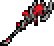
Vessel BusterCraft at Anvil: Crimtane Bar ×8 - Diamond StaffCraft at Anvil: Platinum Bar ×10, Diamond ×8
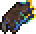
Fizzle StarDrops from Mutagen Treasure Slime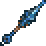
Frigid Javelin ν *Craft at Anvil: Frigid Bar ×12- Geostorm νCraft at Anvil: Vibrant Alloy ×8
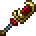
Gold Arc Staff νCraft at Anvil: Gold Bar ×15 / Platinum Soul Staff νCraft at Anvil: Platinum Bar ×15- Ice CubeCraft at Work Bench: Icy Shard ×7
- Pink Jellyfish Staff CCraft at Anvil: Amethyst ×15, Fragment of Tide ×4Drops from Pink JellyfishFishing catch
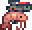
Pistol ShrimpCraft at Anvil: Shrimp ×10, Topaz ×5, Fragment of Tide ×4Fishing catch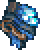
Storm SpellCraft at Anvil: Diamond, Frigid Bar ×8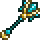
Thorium StaffCraft at Thorium Anvil: Thorium Bar ×8- Veering Wind CCraft at Bookcase: any Ice Block ×30, Feather ×3, Fallen Star ×5, Cloud ×10
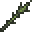
Vilethorn CShadow Orbs in the CorruptionCraft at Anvil: Crimson Rod /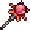
Crimson Rod C +Crimson Hearts in the CrimsonCraft at Anvil: Vilethorn
- Armor
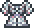
Diamond RobeCraft at Loom: Robe, Diamond ×10 /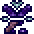
Mystic Robe *Sold by the Traveling Merchant (random stock)- Magic Hat *Sold by the Traveling Merchant (random stock) / Wizard Hat *Drops from Tim
- Silk armorCraft at Work Bench (whole set): Silk ×15, Fallen Star ×15
All-class Ancient Shadow armor *Rare drop from Eaters of Souls in the Corruption
Ancient Shadow armor *Rare drop from Eaters of Souls in the Corruption Frigid armor *Craft at Anvil (whole set): Frigid Bar ×36
Frigid armor *Craft at Anvil (whole set): Frigid Bar ×36 Gold armorCraft at Anvil (whole set): Gold Bar ×75 /
Gold armorCraft at Anvil (whole set): Gold Bar ×75 /  Platinum armorCraft at Anvil (whole set): Platinum Bar ×75
Platinum armorCraft at Anvil (whole set): Platinum Bar ×75 Lead armorCraft at Anvil (whole set): Lead Bar ×60
Lead armorCraft at Anvil (whole set): Lead Bar ×60 Thorium armorCraft at Thorium Anvil (whole set): Thorium Bar ×45
Thorium armorCraft at Thorium Anvil (whole set): Thorium Bar ×45 Vespera armor νCraft at Furnace (whole set): Evostone ×75, Stone Block ×225, Fragment of Earth ×3
Vespera armor νCraft at Furnace (whole set): Evostone ×75, Stone Block ×225, Fragment of Earth ×3
- Accessories
- Band of Starpower ≤Shadow Orbs in the Corruption (or transmute a Panic Necklace in Shimmer)
- Mana BaubleCraft at Work Bench: Fallen Star ×3
- Sapphire RingCraft at Anvil: any Iron Bar, Sapphire, Fallen Star
- Wizard ShoesSold by Cobbler
- Buffs
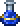
Mana PotionCraft at Placed Bottle: Lesser Mana Potion ×2, Glowing MushroomOpened from Pyramid CrateSold by Merchant (Hardmode)
Permanent- Mana CrystalCraft by hand: Fallen Star ×5
- Arcane Crystal *Throw a Mana Crystal into Shimmer
2 Pre-Eater of Worlds / Brain of Cthulhu
Bosses Glowmoth
Glowmoth Crabulon
Crabulon
 Eater of Worlds or Brain of Cthulhu
Eater of Worlds or Brain of Cthulhu
- Weapons
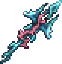
Aquamarine StaffCraft at Anvil: Amethyst Staff, Pearl Shard ×3, Sea Prism ×5, Navystone ×25 (+1 other recipe)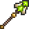
Eighth Plague StaffSold by Desert Acolyte- Fizzle StarDrops from Mutagen Treasure Slime
- Frigid Javelin νCraft at Anvil: Frigid Bar ×12
- Geostorm νCraft at Anvil: Vibrant Alloy ×8
- Gold Arc Staff νCraft at Anvil: Gold Bar ×15 / Platinum Soul Staff νCraft at Anvil: Platinum Bar ×15
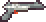
Gray Zapinator † *Sold by the Traveling Merchant (random stock)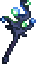
Illuminant StaffDrops from Glowmoth- Magick Staff +Craft at Work Bench: Siphon, Ignite, Dissolve, Poison, Stun, Freeze, Confuse, Charm, Pierce
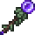
Shadowflame StaffCraft at Arcane Armor Fabricator: Yew Wood ×16, Amethyst ×3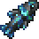
Sparkling Empress CFishing catch- Vilethorn CShadow Orbs in the CorruptionCraft at Anvil: Crimson Rod / Crimson Rod C +Crimson Hearts in the CrimsonCraft at Anvil: Vilethorn
- Support
 Brittle Star Staff (defensive)Drops from Desert Scourge
Brittle Star Staff (defensive)Drops from Desert Scourge
- Armor
- Diamond Robe ΩCraft at Loom: Robe, Diamond ×10 / Mystic Robe Ω *Sold by the Traveling Merchant (random stock)
- Jungle armorCraft at Anvil (whole set): Jungle Spores ×32, Stinger ×10, Vine ×2
- Magic Hat Ω *Sold by the Traveling Merchant (random stock) / Wizard Hat Ω *Drops from Tim
- Silk armorCraft at Work Bench (whole set): Silk ×15, Fallen Star ×15
 Victide armorCraft at Anvil (whole set): Sea Remains ×12
Victide armorCraft at Anvil (whole set): Sea Remains ×12
All-class- Ancient Shadow armor *Rare drop from Eaters of Souls in the Corruption
- Frigid armorCraft at Anvil (whole set): Frigid Bar ×36
- Gold armorCraft at Anvil (whole set): Gold Bar ×75 / Platinum armorCraft at Anvil (whole set): Platinum Bar ×75
- Lead armor †Craft at Anvil (whole set): Lead Bar ×60
- Vespera armor νCraft at Furnace (whole set): Evostone ×75, Stone Block ×225, Fragment of Earth ×3
- Accessories
- Glow Spores *Drops from Glowmoth
- Mana BaubleCraft at Work Bench: Fallen Star ×3
- Mana Flower ≤Craft at Tinkerer's Workshop: Nature's Gift, Mana Potion
- Mana Regeneration Band ≤Craft at Tinkerer's Workshop: Band of Starpower, Band of Regeneration
- Sapphire RingCraft at Anvil: any Iron Bar, Sapphire, Fallen Star
- Wizard ShoesSold by Cobbler
- Buffs
- Magic Power PotionCraft at Placed Bottle: Bottled Water, Moonglow, Deathweed, Fallen Star
- Mana Regeneration PotionCraft at Placed Bottle: Bottled Water, Moonglow, Daybloom, Fallen Star
- Mana PotionCraft at Placed Bottle: Lesser Mana Potion ×2, Glowing MushroomOpened from Pyramid CrateSold by Merchant (Hardmode)
3 Pre-Hive Mind / Perforators
Bosses Queen Jellyfish
Queen Jellyfish Viscount
Viscount
 The Hive Mind or The Perforators
The Hive Mind or The Perforators
- Weapons
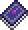
Demon ScytheDrops from Demon, Voodoo Demon- Dreaming Lamp νSold by Archaeologist
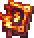
Flare BoltCraft at Bookcase: Hellstone Bar ×10, Fireblossom ×5, Ruby- Gray Zapinator ΩSold by the Traveling Merchant (random stock)
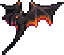
Hellwing StaffCraft at Anvil: Hellstone Bar ×10, Ash Wood ×10- Illuminant StaffDrops from Glowmoth
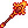
Inferno StaffCraft at Anvil: Hellstone Bar ×15- Photon Geyser *Sold by Archaeologist
- Space Gun ΩCraft at Anvil: Meteorite Bar ×20
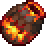
The CauldronCraft at Anvil: Lava Bucket, Hellstone Bar ×8, Obsidian ×20, Ash Block ×20
- Support
- Brittle Star Staff (defensive)Drops from Desert Scourge
 Slime Gun +Opened from Treasure Bag (Queen Slime)
Slime Gun +Opened from Treasure Bag (Queen Slime)
- Armor
- Jungle armorCraft at Anvil (whole set): Jungle Spores ×32, Stinger ×10, Vine ×2
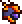
Meteor armor ΩCraft at Anvil (whole set): Meteorite Bar ×45
All-class Crimson armorCraft at Anvil (whole set): Crimtane Bar ×60, Tissue Sample ×45
Crimson armorCraft at Anvil (whole set): Crimtane Bar ×60, Tissue Sample ×45 Depth Diver's armorCraft at Anvil (whole set): Aquaite Bar ×42
Depth Diver's armorCraft at Anvil (whole set): Aquaite Bar ×42 Shadow armorCraft at Anvil (whole set): Demonite Bar ×60, Shadow Scale ×45
Shadow armorCraft at Anvil (whole set): Demonite Bar ×60, Shadow Scale ×45
- Accessories
- Glow Spores *Drops from Glowmoth
- Mana Flower ≤Craft at Tinkerer's Workshop: Nature's Gift, Mana Potion
- Mana Regeneration Band ≤Craft at Tinkerer's Workshop: Band of Starpower, Band of Regeneration
- Sapphire RingCraft at Anvil: any Iron Bar, Sapphire, Fallen Star
- Wizard ShoesSold by Cobbler
- Buffs
- Magic Power PotionCraft at Placed Bottle: Bottled Water, Moonglow, Deathweed, Fallen Star
- Mana Regeneration PotionCraft at Placed Bottle: Bottled Water, Moonglow, Daybloom, Fallen Star
4 Pre-Skeletron
Bosses Queen Bee
Queen Bee Putrid Pinky
Putrid Pinky Deerclops
Deerclops Pharaoh's Curse
Pharaoh's Curse Skeletron
Skeletron
- Weapons
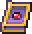
Cursed Spear StormCraft at Anvil: Cursed Matter ×6, Keystone Shard ×10- Demon ScytheDrops from Demon, Voodoo Demon
- Dreaming Lamp νSold by Archaeologist
- Goopwood StaffCraft at Anvil: Corrosive Gel ×32, Goopwood ×16Opened from Treasure Bag (Putrid Pinky)
- Gray Zapinator ΩSold by the Traveling Merchant (random stock)
- Hellwing StaffCraft at Anvil: Hellstone Bar ×10, Ash Wood ×10
- Photon Geyser *Sold by Archaeologist
- Putrid Eye νOpened from Treasure Bag (Putrid Pinky)
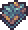
TradewindsCraft at Bookcase: Aerialite Bar ×10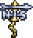
Weather PainDrops from Deerclops
- Support
 Aestheticus +Craft at Anvil: Aerialite Bar ×5, Sea Prism ×10, Fallen Star ×5
Aestheticus +Craft at Anvil: Aerialite Bar ×5, Sea Prism ×10, Fallen Star ×5- Brittle Star Staff (defensive)Drops from Desert Scourge
- Armor
 Aerospec armorCraft at Anvil (whole set): Aerialite Bar ×45, Feather ×5
Aerospec armorCraft at Anvil (whole set): Aerialite Bar ×45, Feather ×5- Cursed armor νCraft at Anvil: Cursed Matter ×8, Keystone Shard ×20
- Jungle armorCraft at Anvil (whole set): Jungle Spores ×32, Stinger ×10, Vine ×2
- Meteor armor ΩCraft at Anvil (whole set): Meteorite Bar ×45
All-class- Crimson armorCraft at Anvil (whole set): Crimtane Bar ×60, Tissue Sample ×45
- Depth Diver's armorCraft at Anvil (whole set): Aquaite Bar ×42
- Shadow armorCraft at Anvil (whole set): Demonite Bar ×60, Shadow Scale ×45
- Accessories
- Glow Jelly *Craft at Tinkerer's Workshop: Royal Jelly, Glow Spores
- Mana Flower ≤Craft at Tinkerer's Workshop: Nature's Gift, Mana Potion
- Mana Regeneration Band ≤Craft at Tinkerer's Workshop: Band of Starpower, Band of Regeneration
- Wizard ShoesSold by Cobbler
- Voiden Bracelet νCraft at Anvil: Cursed Matter ×4, Keystone Shard ×8
- Buffs
- Magic Power PotionCraft at Placed Bottle: Bottled Water, Moonglow, Deathweed, Fallen Star
- Mana Regeneration PotionCraft at Placed Bottle: Bottled Water, Moonglow, Daybloom, Fallen Star
5 Pre-Slime God
Bosses Turkor the Ungrateful
Turkor the Ungrateful Granite Energy Storm
Granite Energy Storm Buried Champion
Buried Champion The Slime God
The Slime God
- Weapons
- Aqua ScepterLocked Gold Chests in the Dungeon
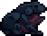
Black AnurianCraft at Anvil: Bone ×15, Abyss Gravel ×10, Sulphuric Scale ×5Opened from Hydrothermal CrateFishing catch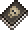
Book of SkullsDrops from Skeletron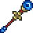
Champion's Bomber StaffDrops from Buried Champion- Demon ScytheDrops from Demon, Voodoo Demon
- Dreaming Lamp νSold by Archaeologist
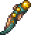
Eel-rodSold by Diverman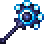
Energy ProjectorDrops from Granite Energy Storm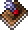
Feather StormDrops from Turkor the Ungrateful- FlamelashShadow Chests in the Underworld (also Obsidian Lock Boxes)
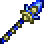
High TideOpened from Golden Lock Box- Photon Geyser *Sold by Archaeologist
- Putrid Eye νOpened from Treasure Bag (Putrid Pinky)
- Support
- Aestheticus +Craft at Anvil: Aerialite Bar ×5, Sea Prism ×10, Fallen Star ×5
- Brittle Star Staff (defensive)Drops from Desert Scourge
- Armor
- Aerospec armorCraft at Anvil (whole set): Aerialite Bar ×45, Feather ×5
- Cursed armor νCraft at Anvil: Cursed Matter ×8, Keystone Shard ×20
- Jungle armorCraft at Anvil (whole set): Jungle Spores ×32, Stinger ×10, Vine ×2
All-class Darksteel armorCraft at Anvil (whole set): Darksteel Ingot ×48
Darksteel armorCraft at Anvil (whole set): Darksteel Ingot ×48- Depth Diver's armorCraft at Anvil (whole set): Aquaite Bar ×42
 Granite armorCraft at Anvil (whole set): Granite Energy Core ×48
Granite armorCraft at Anvil (whole set): Granite Energy Core ×48
- Accessories
- Glow Jelly *Craft at Tinkerer's Workshop: Royal Jelly, Glow Spores
- Mana Flower ≤Craft at Tinkerer's Workshop: Nature's Gift, Mana Potion
- Mana Regeneration Band ≤Craft at Tinkerer's Workshop: Band of Starpower, Band of Regeneration
- Wizard ShoesSold by Cobbler
- Voiden Bracelet νCraft at Anvil: Cursed Matter ×4, Keystone Shard ×8
- Buffs
- Magic Power PotionCraft at Placed Bottle: Bottled Water, Moonglow, Deathweed, Fallen Star
- Mana Regeneration PotionCraft at Placed Bottle: Bottled Water, Moonglow, Daybloom, Fallen Star
6 Pre-Wall of Flesh
Bosses The Excavator
The Excavator The Advisor
The Advisor Star Scouter
Star Scouter Wall of Flesh
Wall of Flesh
- Weapons
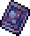
Abyssal TomeDrops from The Slime God- Arc Staff Mk2 νCraft at Hardlight Fabricator: Gold Arc Staff, Twilight Alloy ×16
- Champion's Bomber StaffDrops from Buried Champion
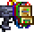
Code CorrupterCraft at Hardlight Fabricator: Hardlight Alloy ×16- Crescent Staff νCraft at Hardlight Fabricator: Illuminant Staff, Platinum Soul Staff, Starlight Alloy ×8
- Dreaming Lamp + νSold by Archaeologist
- Energy ProjectorDrops from Granite Energy Storm
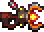
Magma Concentrator νDrops from Excavator ArmOpened from Treasure Bag (The Excavator)- Night's RayCraft at Demon Altar: Vilethorn, Magic Missile, Wand of Frosting, Amber Staff, Purified Gel ×10 (+3 other recipes)
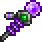
Particle WhipDrops from Star Scouter- Photon Geyser *Sold by Archaeologist
- Putrid Eye νOpened from Treasure Bag (Putrid Pinky)
- Support
- Aestheticus +Craft at Anvil: Aerialite Bar ×5, Sea Prism ×10, Fallen Star ×5
- Brittle Star Staff (defensive)Drops from Desert Scourge
- Armor
- Cursed armor νCraft at Anvil: Cursed Matter ×8, Keystone Shard ×20
 Statigel armorCraft at Solidifier (whole set): Purified Gel ×34, Blighted Gel ×34
Statigel armorCraft at Solidifier (whole set): Purified Gel ×34, Blighted Gel ×34
All-class- Darksteel armorCraft at Anvil (whole set): Darksteel Ingot ×48
- Depth Diver's armorCraft at Anvil (whole set): Aquaite Bar ×42
- Accessories
- Glow Jelly *Craft at Tinkerer's Workshop: Royal Jelly, Glow Spores
- Mana Flower ≤Craft at Tinkerer's Workshop: Nature's Gift, Mana Potion
- Mana PolarizerOpened from Treasure Bag (The Slime God)
- Mana Regeneration Band ≤Craft at Tinkerer's Workshop: Band of Starpower, Band of Regeneration
- StarbeltCraft at Hardlight Fabricator: Mana Crystal, Dissolving Aether, Starlight Alloy ×8
- Wizard ShoesSold by Cobbler
- Voiden Bracelet νCraft at Anvil: Cursed Matter ×4, Keystone Shard ×8
- Buffs
- Magic Power PotionCraft at Placed Bottle: Bottled Water, Moonglow, Deathweed, Fallen Star
- Mana Regeneration PotionCraft at Placed Bottle: Bottled Water, Moonglow, Daybloom, Fallen Star
Hardmode
The modpack's wiki has not written Magic lists past Pre-Hardmode. From here the class picks come from the Calamity Mod wiki's class setups for the matching tier, so they cover vanilla and Calamity items only. The pack rebalances some of them, so check tooltips. All-class armor still comes from the modpack's wiki. Δ marks an item Calamity changes.
Every Hardmode stage uses the same buffs: Super Mana Potion; Magic Power Potion; Mana Regeneration Potion; Clairvoyance.
The "Other mods" lines are read from the pack's installed mod files: magic weapons and class armor from Thorium, Secrets of the Shadows, Catalyst and the other add-ons, placed at the stage their recipe or boss drop first becomes available under this pack's changes. Numbers are base damage after the pack's balance changes, and a boss name means the item drops there. ≈ marks an item placed by rarity alone, which can be a stage off.
7 Pre-Mechanical Bosses
Bosses Borean Strider
Borean Strider Fallen BeholderDreadnautilus
Fallen BeholderDreadnautilus Queen Slime
Queen Slime Cryogen
Cryogen

 first mechanical boss
first mechanical boss
- Weapons
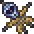
Shadowflame Hex DollDrops from Goblin Summoners (Hardmode Goblin Army)- PoseidonDrops from Giant Clam
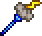
Nimbus Rod +Drops from Angry Nimbus- Meteor StaffCraft at Mythril Anvil: Meteorite Bar ×20, Pixie Dust ×10, Soul of Light ×10
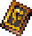
Death Valley DusterCraft at Bookcase: Spell Tome, Sturdy Fossil ×25, Ancient Cloth ×2- Blood Thorn † *Drops from Hemogoblin Shark
- Armor
- Palladium armorCraft at Anvil (whole set): Palladium Bar ×54
- Cobalt armor ΔCraft at Anvil (whole set): Cobalt Bar ×45
All-class Crystal Assassin armorDrops from Queen Slime
Crystal Assassin armorDrops from Queen Slime Dragon's armorCraft at Mythril Anvil (whole set): Green Dragon Scale ×45 /
Dragon's armorCraft at Mythril Anvil (whole set): Green Dragon Scale ×45 /  Flesh armorCraft at Anvil (whole set): Unfathomable Flesh ×45
Flesh armorCraft at Anvil (whole set): Unfathomable Flesh ×45 Durasteel armorSold by Blacksmith
Durasteel armorSold by Blacksmith Mollusk armor †Craft at Anvil (whole set): Mollusk Husk ×31, Sea Prism ×60
Mollusk armor †Craft at Anvil (whole set): Mollusk Husk ×31, Sea Prism ×60
- Accessories
- Sorcerer EmblemDrops from Wall of Flesh
- Arcane FlowerCraft at Tinkerer's Workshop: Mana Flower, Putrid Scent
- Mana PolarizerOpened from Treasure Bag (The Slime God)
- Permafrost's ConcoctionSold by Archmage
- Other mods' weapons
- Thorium
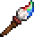
Geomancer's Brush ≈ (90)Craft at Mythril Anvil: Dynasty Wood ×20, Cloth ×8, Soul of Light ×8- Cyclone (70)Craft at Bookcase: Spell Tome, Cloud ×20, Soul of Flight ×10
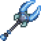
Borean Fang Staff (58, Borean Strider)Drops from Borean Strider Base- Prism Staff ≈ (55)Drops from Spectrumite
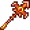
Palladium Staff (48)Craft at Anvil: Palladium Bar ×12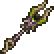
Vile Spitter ≈ (46)Drops from Vile Floater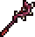
Blood Clot Staff (45)Craft at Anvil: Unfathomable Flesh ×9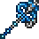
Cobalt Staff (40)Craft at Anvil: Cobalt Bar ×8- Useless Staff ≈ (40)Craft at Mythril Anvil: any Mythril Bar ×14, Soul of Light ×12, Aquaite Bar ×12
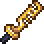
Heaven's Gate ≈ (38)Craft at Mythril Anvil: Forbidden Fragment ×2, Pharaoh's Breath ×8- Joyeuse (38)Craft at Anvil: Hallowed Charm ×12
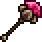
Lodestone Staff (34)Craft at Anvil: Lodestone Ingot ×8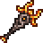
Pyroclast Staff (33, Fallen Beholder)Drops from Fallen Beholder- Night Staff ≈ (30)Craft at Anvil: Soul of Night ×6, Shadewood ×16 (+1 other recipe)
- Sea Foam Scepter (30)Craft at Anvil: Abyssal Chitin ×8
- Frost Plague Staff ≈ (28)Drops from Chilled Spitter, Freezer
- Dragon's Breath (25)Craft at Bookcase: Spell Tome, Green Dragon Scale ×9
- Dynasty War Fan (18)Craft at Anvil: Dynasty Wood ×8, Soul of Light ×4, Soul of Night ×4
Infernal Arsenal- Star Scepter (27)Craft by hand: Lodestone Ingot ×5, Crystal Shard ×15, Soul of Light ×10, Fallen Star ×5
- Other mods' class armor
- Thorium
- Naga-Skin setCraft at Anvil (whole set): Abyssal Chitin ×36
- White Knight setCraft at Anvil (whole set): Hallowed Charm ×42
8 Post-Mechanical Boss 1
Bosses Aquatic Scourge
Aquatic Scourge

 second mechanical boss
second mechanical boss
- Weapons
- Unholy TridentDrops from Red Devil
- Snowstorm Staff CDrops from Cryogen
- R-GSS: VulcanCraft at Mythril Anvil: Mysterious Circuitry ×12, Dubious Plating ×8, any Mythril Bar ×10, Soul of Might ×20
- Blood Thorn †Drops from Hemogoblin Shark
- Brimrose StaffCraft at Mythril Anvil: Unholy Core ×8
- Nimbus Rod +Drops from Angry Nimbus
- Armor
- Apprentice armorSold by the Tavernkeep for Defender Medals (after any mechanical boss)
- Mythril armor ΔCraft at Mythril Anvil (whole set): Mythril Bar ×45
- Orichalcum armorCraft at Mythril Anvil (whole set): Orichalcum Bar ×54
All-class- Crystal Assassin armorDrops from Queen Slime
- Dragon's armorCraft at Mythril Anvil (whole set): Green Dragon Scale ×45 / Flesh armorCraft at Anvil (whole set): Unfathomable Flesh ×45
- Durasteel armorSold by Blacksmith
- Mollusk armor †Craft at Anvil (whole set): Mollusk Husk ×31, Sea Prism ×60
- Accessories
- Sorcerer EmblemDrops from Wall of Flesh
- Arcane FlowerCraft at Tinkerer's Workshop: Mana Flower, Putrid Scent
- Mana PolarizerOpened from Treasure Bag (The Slime God)
- Other mods' weapons
- Thorium
- Omega Blaster ≈ (118)Craft at Mythril Anvil: any Adamantite Bar ×8, Meteorite Bar ×14, Strange Alien Tech
- Dutchman's Avarice ≈ (60)Drops from Flying Dutchman
- Mythril Staff (56)Craft at Mythril Anvil: Mythril Bar ×10
- Devil Dagger ≈ (45)Drops from Hell Bringer Mimic
- Valadium Staff (44)Craft at Mythril Anvil: Valadium Ingot ×8
- Plasma Staff ≈ (42)Craft at Mythril Anvil: Hallowed Bar ×12, Life-Powered Energy Cell
- Kinetic Knife ≈ (41)Sold by Weapon Master
- Orichalcum Staff (40)Craft at Mythril Anvil: Orichalcum Bar ×12
- Icy Gaze ≈ (38)Reward for the Tracker's contract "Ice Breaker"
- Static Prod ≈ (32)Craft at Mythril Anvil: Hallowed Bar ×12, Cog ×10, any Wood ×10
- Hydromancer's Catalyst ≈ (30)Drops from Submerged Mimic
Secrets of the Shadows- Green Jellyfish Staff (70)Craft at Mythril Anvil: Purple Jellyfish Staff, Soul of Light ×15, Soul of Sight ×15
- Incinerator Glove ≈ (33)Drops from Inferno Construct
- Purple Jellyfish Staff (32)Craft at Mythril Anvil: Pink Jellyfish Staff, Blue Jellyfish Staff, Dissolving Aether, Cursed Matter ×5, Soul of Night ×12, Amethyst
- Biomass Bloom (24)Craft at Mythril Anvil: Biomass Blast, Orichalcum Bar ×12, Soul of Light ×12, Soul of Night ×12, Emerald (+1 other recipe)
Clamity- The Generator ≈ (77)Drops from Pyrogen
9 Post-Mechanical Boss 2
Bosses Brimstone Elemental
Brimstone Elemental

 third mechanical boss
third mechanical boss
- Weapons
- Unholy TridentDrops from Red Devil
- R-GSS: VulcanCraft at Mythril Anvil: Mysterious Circuitry ×12, Dubious Plating ×8, any Mythril Bar ×10, Soul of Might ×20
- Nimbus Rod +Drops from Angry Nimbus
- Ion BlasterCraft at Mythril Anvil: any Adamantite Bar ×10, Soul of Light ×5
- Frigidflash BoltCraft at Bookcase: Frost Bolt, Flare Bolt, Essence of Havoc ×5, Essence of Eleum ×5
- Brimrose StaffCraft at Mythril Anvil: Unholy Core ×8
- Armor
- Adamantite armor ΔCraft at Mythril Anvil (whole set): Adamantite Bar ×54
- Orichalcum armorCraft at Mythril Anvil (whole set): Orichalcum Bar ×54
All-class- Crystal Assassin armorDrops from Queen Slime
- Dragon's armorCraft at Mythril Anvil (whole set): Green Dragon Scale ×45 / Flesh armorCraft at Anvil (whole set): Unfathomable Flesh ×45
- Durasteel armorSold by Blacksmith
- Mollusk armor †Craft at Anvil (whole set): Mollusk Husk ×31, Sea Prism ×60
- Accessories
- Arcane FlowerCraft at Tinkerer's Workshop: Mana Flower, Putrid Scent
- Sorcerer EmblemDrops from Wall of Flesh
- Mana PolarizerOpened from Treasure Bag (The Slime God)
- Other mods' weapons
- Thorium
- Wondrous Wand ≈ (86)Craft at Soul Forge: Strange Plating ×12, Soul of Plight ×8, Frost Core, Cursed Flame ×15, Soul of Night ×10 (+1 other recipe)
- Titanium Staff (60)Craft at Mythril Anvil: Titanium Bar ×13
- Snow White ≈ (56)Craft at Soul Forge: Strange Plating ×12, Steam Battery ×10, Adamantite Bar ×8, Icy Shard ×8 (+1 other recipe)
- Adamantite Staff (50)Craft at Mythril Anvil: Adamantite Bar ×12
- Bass Booster ≈ (48)Craft at Soul Forge: Strange Plating ×12, Music Box
10 Pre-Polaris
Bosses Polaris
Polaris
- The Calamity guide has no tier between the third mechanical boss and Plantera. Carry stage 9's gear into Polaris and add stage 11 picks as they unlock.
- Other mods' weapons
- Thorium
- Hallowed Staff (48)Craft at Mythril Anvil: Hallowed Bar ×12
- Blackhole Cannon (40)Craft at Mythril Anvil: Strange Plating ×12, Soul of Night ×15, Soul of Fright ×5, Soul of Might ×5, Soul of Sight ×5, Void Heart
Infernal Arsenal- Luminant Tether (160)Craft at Mythril Anvil: Hallowed Bar ×20, Soul of Light ×10, Pixie Dust ×10, Forbidden Fragment
Secrets of the Shadows- Tome of the Reaper (48)Craft at Mythril Anvil: Demon Scythe, Soul of Fright ×10, Dissolving Umbra
11 Pre-Plantera
Bosses Lich
Lich Calamitas Clone
Calamitas Clone Plantera
Plantera
- Weapons
- Venom StaffCraft at Mythril Anvil: Poison Staff, Chlorophyte Bar ×14
- Gleaming MagnoliaCraft at Mythril Anvil: Mana Rose, Hallowed Bar ×5 (+1 other recipe)
- Shadecrystal BarrageCraft at Bookcase: Crystal Storm, Cryonic Bar ×12
- SHPC Ω (loaded with Souls of Sight)Craft at Mythril Anvil: Prototype Plasma Drive, Suspicious Scrap ×4, any Mythril Bar ×10, Soul of Fright ×5, Soul of Might ×5, Soul of Sight ×5
- Armor
- Chlorophyte armorCraft at Mythril Anvil (whole set): Chlorophyte Bar ×54
- Brimflame armorCraft at Mythril Anvil (whole set): Unholy Core ×30, Ashes of Calamity ×18
- Hallowed armorCraft at Mythril Anvil (whole set): Hallowed Bar ×54
All-class- Crystal Assassin armorDrops from Queen Slime
- Dragon's armorCraft at Mythril Anvil (whole set): Green Dragon Scale ×45 / Flesh armorCraft at Anvil (whole set): Unfathomable Flesh ×45
- Durasteel armorSold by Blacksmith
- Mollusk armor †Craft at Anvil (whole set): Mollusk Husk ×31, Sea Prism ×60
- Accessories
- Arcane FlowerCraft at Tinkerer's Workshop: Mana Flower, Putrid Scent
- Celestial EmblemCraft at Tinkerer's Workshop: Celestial Magnet, Avenger Emblem
- Mana PolarizerOpened from Treasure Bag (The Slime God)
- Other mods' weapons
- Thorium
- Stalagmite (58)Craft at Bookcase: Spell Tome, Hellstone Bar ×8, Soul of Plight ×8
- Chlorophyte Staff (51)Craft at Mythril Anvil: Chlorophyte Bar ×12
- Wither Staff (46, Lich)Drops from Lich
- Twin's Ire (44)Craft at Soul Forge: Strange Plating ×12
Secrets of the Shadows- Azure Bombardment (40)Craft at Mythril Anvil: Absolute Alloy ×10, Shard Staff, Storm Spell
12 Pre-Golem
Bosses Leviathan and Anahita
Leviathan and Anahita Astrum Aureus
Astrum Aureus Ocram
Ocram Golem
Golem
- Weapons
- Alula AustralisDrops from Astrum Aureus
- Wasp GunOpened from Treasure Bag (Queen Slime)
- Undine's RetributionCraft at Mythril Anvil: Voidstone ×30, Depth Cells ×30
- SHPC Ω (loaded with Souls of Sight)Craft at Mythril Anvil: Prototype Plasma Drive, Suspicious Scrap ×4, any Mythril Bar ×10, Soul of Fright ×5, Soul of Might ×5, Soul of Sight ×5
- Rainbow Gun +Hallowed Chest in the Dungeon (needs a Hallowed Key; opens after Plantera)
- Primordial EarthCraft at Bookcase: Death Valley Duster, Amber ×5, Ectoplasm ×5
- Armor
- Spectre armorCraft at Mythril Anvil (whole set): Spectre Bar ×54
- Hallowed armorCraft at Mythril Anvil (whole set): Hallowed Bar ×54
- Brimflame armorCraft at Mythril Anvil (whole set): Unholy Core ×30, Ashes of Calamity ×18
All-class Reaver armorCraft at Mythril Anvil (whole set): Perennial Bar ×45
Reaver armorCraft at Mythril Anvil (whole set): Perennial Bar ×45 Clamitas armorCraft at Mythril Anvil (whole set): Mollusk Shellmet, Husk of Calamity ×42, Ashes of Calamity ×19, Amidias' Pendant, Mollusk Shelleggings, Mollusk Shellplate, Giant Pearl
Clamitas armorCraft at Mythril Anvil (whole set): Mollusk Shellmet, Husk of Calamity ×42, Ashes of Calamity ×19, Amidias' Pendant, Mollusk Shelleggings, Mollusk Shellplate, Giant Pearl Demon Blood armorCraft at Soul Forge (whole set): Demon Blood Shard ×40
Demon Blood armorCraft at Soul Forge (whole set): Demon Blood Shard ×40
- Accessories
- Celestial EmblemCraft at Tinkerer's Workshop: Celestial Magnet, Avenger Emblem
- Arcane FlowerCraft at Tinkerer's Workshop: Mana Flower, Putrid Scent
- Mana PolarizerOpened from Treasure Bag (The Slime God)
- Other mods' weapons
- Thorium
- Dark Flame ≈ (120)Craft at Bookcase: Spell Tome, Soul of Night ×12, Chlorophyte Bar ×12
- Razorlash ≈ (68)Craft at Bookcase: Spell Tome, Soul of Flight ×20, Chlorophyte Bar ×12
- Demon Blood Staff (62)Craft at Soul Forge: Demon Blood Shard ×8
Secrets of the Shadows- Brachial Lance ≈ (68)Craft at Mythril Anvil: Frigid Javelin, Cursed Spear Storm, Geostorm, Ruby Keystone, Cursed Matter ×5, Soul of Night ×5, Soul of Might ×5
Consolaria- Eye of Ocram (62, Ocram)Drops from Ocram
- Other mods' class armor
- Consolaria
- Phantasmal setCraft at Mythril Anvil (whole set): Hallowed Headgear, Adamantite or Titanium Bar ×32, Soul of Fright ×35, Soul of Blight ×35, Hallowed Greaves, Hallowed Plate Mail
- Ancient Phantasmal setCraft at Demon Altar (whole set): Ancient Hallowed Headgear, Adamantite or Titanium Bar ×32, Soul of Fright ×35, Soul of Blight ×35, Ancient Hallowed Plate Mail, Ancient Hallowed Greaves
13 Post-Golem
Bosses Forgotten One
Forgotten One
- Weapons
- Alula AustralisDrops from Astrum Aureus
- Bat ScepterDrops from Pumpking (Pumpkin Moon)
- Charged Blaster CannonRare drop from Martian Madness enemies
- Rainbow Gun +Hallowed Chest in the Dungeon (needs a Hallowed Key; opens after Plantera)
- RazorpineDrops from Everscream (Frost Moon)
- WingmanDrops from Brain Scrambler, Gigazapper, Gray Grunt, Martian Engineer and 2 more
- Armor
- Hydrothermic armorCraft at Mythril Anvil (whole set): Scoria Bar ×55
- Brimflame armorCraft at Mythril Anvil (whole set): Unholy Core ×30, Ashes of Calamity ×18
All-class- Reaver armorCraft at Mythril Anvil (whole set): Perennial Bar ×45
- Clamitas armorCraft at Mythril Anvil (whole set): Mollusk Shellmet, Husk of Calamity ×42, Ashes of Calamity ×19, Amidias' Pendant, Mollusk Shelleggings, Mollusk Shellplate, Giant Pearl
 Conduit armorCraft at Mythril Anvil (whole set): Martian Conduit Plating ×120
Conduit armorCraft at Mythril Anvil (whole set): Martian Conduit Plating ×120- Demon Blood armorCraft at Soul Forge (whole set): Demon Blood Shard ×40
- Accessories
- Sigil of CalamitasCraft at Mythril Anvil: Celestial Emblem, Scoria Bar ×8, Ashes of Calamity ×15
- Eye of the Golem ΔDrops from GolemOpened from Treasure Bag (Queen Slime)
- Destroyer EmblemCraft at Tinkerer's Workshop: Avenger Emblem, Eye of the Golem
- Arcane FlowerCraft at Tinkerer's Workshop: Mana Flower, Putrid Scent
- Other mods' weapons
- Thorium
- Lightning Staff ≈ (145)Craft at Mythril Anvil: Magnet Sphere, Ectoplasm ×5, Wood ×20
- Charon's Beacon (110)Drops from Mourning Wood
- Erupting Flare ≈ (104)Craft at Mythril Anvil: Solar Pebble ×12, Solar Tablet Fragment ×8
- Dark Grip ≈ (100)Craft at Soul Forge: Dark Matter ×10
- God Killer ≈ (88)Reward for the Tracker's contract "Destroy All Monsters" (Mothron)
- P.L.G. 8999 ≈ (55)Sold by Cyborg
- Super Plasma Cannon ≈ (50)Drops from Martian Saucer
- Old God's Vision (45, Forgotten One)Drops from Forgotten One
- Time Gate (42)Craft at Bookcase: Spell Tome, Dark Matter ×8, Forbidden Fragment ×2
- Chromatic Fury ≈ (30)Sold by Princess
- Dread Blaster (24)Craft at Soul Forge: Dread Soul ×8
- The Black Staff ≈ (22)Reward for the Tracker's contract "Tracker's End" (Bone Lee)
Secrets of the Shadows- Tangle Staff ≈ (80)Jungle Chest in the Dungeon (locked biome chest)
- Revolution (48)Craft at Mythril Anvil: Solar Tablet Fragment ×20, Lihzahrd Power Cell
- Other mods' class armor
- Thorium
- Cryomancer's setCraft at Mythril Anvil (whole set): Permafrost ×66
- Titan armor with the Titan HeadgearCraft at Soul Forge: Titanic Bar ×12
14 Pre-Lunar Events
Bosses Duke Fishron
Duke Fishron The Plaguebringer Goliath
The Plaguebringer Goliath Empress of Light
Empress of Light Lux
Lux Ravager
Ravager Lunatic Cultist
Lunatic Cultist
- Weapons
- Rainbow Gun +Hallowed Chest in the Dungeon (needs a Hallowed Key; opens after Plantera)
- Plague StaffDrops from The Plaguebringer Goliath
- HematemesisDrops from Ravager
- Bubble GunDrops from Duke Fishron
- Stellar TuneOpened from Treasure Bag (Queen Slime)
- WingmanDrops from Brain Scrambler, Gigazapper, Gray Grunt, Martian Engineer and 2 more
- Armor
- Hydrothermic armorCraft at Mythril Anvil (whole set): Scoria Bar ×55
- Brimflame armorCraft at Mythril Anvil (whole set): Unholy Core ×30, Ashes of Calamity ×18
All-class Terrarium armor (no focus)Craft at Ancient Manipulator (whole set): Terrarium Core ×36
Terrarium armor (no focus)Craft at Ancient Manipulator (whole set): Terrarium Core ×36- Conduit armorCraft at Mythril Anvil (whole set): Martian Conduit Plating ×120
- Accessories
- Sigil of CalamitasCraft at Mythril Anvil: Celestial Emblem, Scoria Bar ×8, Ashes of Calamity ×15
- Eye of the Golem ΔDrops from GolemOpened from Treasure Bag (Queen Slime)
- Destroyer EmblemCraft at Tinkerer's Workshop: Avenger Emblem, Eye of the Golem
- Arcane FlowerCraft at Tinkerer's Workshop: Mana Flower, Putrid Scent
- Other mods' weapons
- Thorium
- Ancient Spark ≈ (120)Drops from Lunatic Cultist
- Ancient Frost ≈ (68)Drops from Lunatic Cultist
- Ancient Flame ≈ (32)Drops from Lunatic Cultist
Secrets of the Shadows- Supernova Storm (60)Craft at Mythril Anvil: Phase Bar ×18, Azure Bombardment
- Stellar Shot ≈ (50)Craft at Mythril Anvil: Phase Bar ×24, Perfect Star, Laser Machinegun, Razorpine
- Hyperlight Geyser (48)Craft at Mythril Anvil: Photon Geyser, Phase Bar ×24, Dissolving Brilliance (+1 other recipe)
15 Pre-Moon Lord
Bosses Astrum Deus
Astrum Deus Subspace Serpent
Subspace Serpent Astrageldon
Astrageldon Bereft Vassal
Bereft Vassal Moon Lord
Moon Lord
- Weapons
- Nebula BlazeCraft at Ancient Manipulator: Nebula Fragment ×18
- Nebula ArcanumCraft at Ancient Manipulator: Nebula Fragment ×18
- Apoctosis Array CCraft at Ancient Manipulator: Ion Blaster, Solar Fragment ×12
- Star ShowerDrops from Astrum Deus
- The Swarmer Ω (with Hive Pack)Craft at Ancient Manipulator: Bee Gun, Wasp Gun, Stardust Fragment ×6
- Armor
- Hydrothermic armorCraft at Mythril Anvil (whole set): Scoria Bar ×55
All-class Astral armorCraft at Ancient Manipulator (whole set): Astral Bar ×54
Astral armorCraft at Ancient Manipulator (whole set): Astral Bar ×54- Terrarium armor (no focus)Craft at Ancient Manipulator (whole set): Terrarium Core ×36
- Accessories
- Sigil of CalamitasCraft at Mythril Anvil: Celestial Emblem, Scoria Bar ×8, Ashes of Calamity ×15
- Hive Pack ΩOpened from Treasure Bag (Queen Slime)
- Eye of the Golem ΔDrops from GolemOpened from Treasure Bag (Queen Slime)
- Destroyer EmblemCraft at Tinkerer's Workshop: Avenger Emblem, Eye of the Golem
- Arcane FlowerCraft at Tinkerer's Workshop: Mana Flower, Putrid Scent
- Other mods' weapons
- Thorium
- Cat's Eye Great Staff ≈ (210)Craft at Ancient Manipulator: Rainbow Rod, Nebula Fragment ×10, Topaz ×5
- Terrarium Sage Staff (120)Craft at Ancient Manipulator: Terrarium Core ×9
- Ancient Light (110, Lunatic Cultist)Opened from Lunatic Cultist Treasure Bag
- Teleologic Imposition ≈ (70)Craft at Ancient Manipulator: Glass ×20, Concentrated Thorium ×8, Nebula Fragment ×8
Infernal Arsenal- Arckane Staff (110)Craft at Ancient Manipulator: Astral Bar ×8, Ashes of Calamity ×5, Depth Cells ×5, Abyssal Chitin ×3, Infected Armor Plating ×3, Voidstone ×3
Secrets of the Shadows- Apocalypse (330)Craft at Mythril Anvil: Sanguite Scales ×15, Green Jellyfish Staff
- Dance of Death ≈ (110)Craft at Mythril Anvil: Sanguite Scales ×15, Tome of the Reaper, Shifting Sands
Catalyst- Exalted Horizon (370)Craft at Ancient Manipulator: Eldritch Tome, Star Shower, Metanova Bar ×5
Infernum- Arid Battlecry (93, Bereft Vassal)Drops from Argus, the Bereft Vassal
Post-Moon Lord
Class picks still come from the Calamity Mod wiki. Stages 19 and 20 share one list because Calamity has no tier for the Primordials. Every stage uses Supreme Mana Potion, Magic Power Potion, Mana Regeneration Potion and Clairvoyance.
16 Pre-Providence
Bosses Profaned Guardians
Profaned Guardians Dragonfolly
Dragonfolly Providence
Providence
- Weapons
- Chronomancer's ScytheCraft at Mythril Anvil: Ice Sickle, Fast Clock, Luminite Bar ×10, Essence of Eleum ×6
- GenesisCraft at Mythril Anvil: Laser Rifle, Luminite Bar ×5, Life Alloy ×5
- NucleosynthesisCraft at Mythril Anvil: Photosynthesis, Luminite Bar ×5, Life Alloy ×5, Nebula Fragment ×5
- Nuclear FuryCraft at Bookcase: Razorblade Typhoon, Poseidon, Luminite Bar ×5
- Rouge SlashDrops from DragonfollyOpened from Treasure Bag (The Dragonfolly)
- Armor
- Nebula armor Ω (with Nebula Mantle)Craft at Ancient Manipulator (whole set): Nebula Fragment ×45, Luminite Bar ×36
All-class- Astral armorCraft at Ancient Manipulator (whole set): Astral Bar ×54
- Terrarium armor (no focus)Craft at Ancient Manipulator (whole set): Terrarium Core ×36
- Accessories
- Sigil of CalamitasCraft at Mythril Anvil: Celestial Emblem, Scoria Bar ×8, Ashes of Calamity ×15
- Arcane FlowerCraft at Tinkerer's Workshop: Mana Flower, Putrid Scent
- Destroyer EmblemCraft at Tinkerer's Workshop: Avenger Emblem, Eye of the Golem
- Nebula Mantle Δ ΩCraft at Ancient Manipulator: Nebula Fragment ×14, Luminite Bar ×10
17 Pre-Polterghast
Bosses Ceaseless Void
Ceaseless Void Storm Weaver
Storm Weaver Signus
Signus Polterghast
Polterghast
- Weapons
- Purge GuzzlerDrops from Providence, the Profaned Goddess
- Plasma CasterCraft at Mythril Anvil: Mysterious Circuitry ×18, Dubious Plating ×12, Uelibloom Bar ×8, Luminite Bar ×4
- Nano PurgeCraft at Mythril Anvil: Laser Machinegun, Uelibloom Bar ×10, Nanites ×100
- Thorn BlossomCraft at Mythril Anvil: Arch Amaryllis, Uelibloom Bar ×10, Unholy Essence ×10
- VolterionDrops from Storm Weaver
- Armor
- Tarragon armorCraft at Mythril Anvil (whole set): Uelibloom Bar ×54, Divine Geode ×36
- Prismatic armorCraft at Mythril Anvil (whole set): Armored Shell ×9, Exodium Cluster ×15, Divine Geode ×18, Nanites ×900
All-class- Astral armorCraft at Ancient Manipulator (whole set): Astral Bar ×54
- Accessories
- Sigil of CalamitasCraft at Mythril Anvil: Celestial Emblem, Scoria Bar ×8, Ashes of Calamity ×15
- Destroyer EmblemCraft at Tinkerer's Workshop: Avenger Emblem, Eye of the Golem
- Arcane FlowerCraft at Tinkerer's Workshop: Mana Flower, Putrid Scent
18 Pre-Devourer of Gods
Bosses The Old Duke
The Old Duke The Devourer of Gods
The Devourer of Gods
- Weapons
- Dark Spark CCraft at Mythril Anvil: Last Prism, Dark Plasma ×10, Ruinous Soul ×20, Divine Geode ×30
- Phantasmal FuryCraft at Mythril Anvil: Spectre Staff, Ruinous Soul ×2, Dark Plasma
- Shadowbolt StaffCraft at Mythril Anvil: Shadowbeam Staff, Ruinous Soul ×2, Armored Shell
- Venusian TridentCraft at Mythril Anvil: Inferno Fork, Ruinous Soul ×2, Twisting Nether
- Vitriolic ViperDrops from The Old Duke
- Armor
- Prismatic armorCraft at Mythril Anvil (whole set): Armored Shell ×9, Exodium Cluster ×15, Divine Geode ×18, Nanites ×900
- Bloodflare armor Ω (with Heartreach or Photosynthesis Potion)Craft at Mythril Anvil (whole set): Bloodstone ×110, Blood Orb ×45, Ruinous Soul ×9
All-class Omega Blue armorCraft at Mythril Anvil (whole set): Reaper Tooth ×12, Depth Cells ×60, Ruinous Soul ×6
Omega Blue armorCraft at Mythril Anvil (whole set): Reaper Tooth ×12, Depth Cells ×60, Ruinous Soul ×6
- Accessories
- Sigil of CalamitasCraft at Mythril Anvil: Celestial Emblem, Scoria Bar ×8, Ashes of Calamity ×15
- Arcane FlowerCraft at Tinkerer's Workshop: Mana Flower, Putrid Scent
- Buffs, added
- Heartreach PotionCraft at Placed Bottle: Bottled Water, Crimson Tigerfish, Daybloom / Photosynthesis Potion ΩCraft at Alchemy Table: Bottled Water, Daybloom ×3, Essence of Sunlight (+1 other recipe)
19 Pre-Primordials and 20 Pre-Yharon
Bosses The Primordials
The Primordials Yharon, Dragon of Rebirth
Yharon, Dragon of Rebirth
- Weapons
- Voltaic ClimaxCraft at Cosmic Anvil: Magnetic Meltdown, Cosmilite Bar ×8, Darksun Fragment ×8
- Tesla CannonCraft at Cosmic Anvil: Mysterious Circuitry ×25, Dubious Plating ×15, Cosmilite Bar ×8, Ascendant Spirit Essence ×2
- Primordial Ancient †Craft at Bookcase: Primordial Earth, Cosmilite Bar ×8, Endothermic Energy ×20
- OmicronCraft at Cosmic Anvil: Genesis, Wingman, Cosmilite Bar ×8, Endothermic Energy ×20
- Hyperdeath Rift ScepterDrops from The Devourer of Gods
- Armor
- Silva armorCraft at Cosmic Anvil (whole set): Planty Mush ×240, Effulgent Feather ×34, Ascendant Spirit Essence ×11
All-class- Omega Blue armorCraft at Mythril Anvil (whole set): Reaper Tooth ×12, Depth Cells ×60, Ruinous Soul ×6
- Accessories
- Sigil of CalamitasCraft at Mythril Anvil: Celestial Emblem, Scoria Bar ×8, Ashes of Calamity ×15
- Ethereal TalismanCraft at Cosmic Anvil: Sigil of Calamitas, any Mana Flower, Ascendant Spirit Essence ×4 (+1 other recipe)Drops from Signus
- Other mods' weapons, stage 19
- Infernal Arsenal
- Miniaturized Requiem Engine (500)Craft at Cosmic Anvil: Cosmilite Bar ×10, Ascendant Spirit Essence ×2
Clamity- Ethereal Knives (190)Craft at Cosmic Anvil: Jaws of Oblivion, Moonstone Knives, Cosmilite Bar ×8, Darksun Fragment ×8
- Other mods' weapons, after the Primordials
- Thorium
- Devil's Claw (675)Craft at Ancient Manipulator: Inferno Essence ×3
- Almanac of Agony (600)Craft at Ancient Manipulator: Inferno Essence ×3
21 Pre-Shadowspec
Bosses Primordial Wyrm
Primordial Wyrm Exo Mechs
Exo Mechs Supreme Witch, Calamitas
Supreme Witch, Calamitas XG-07 Mars
XG-07 Mars Goozma
Goozma
- Weapons
- Yharim's Crystal *Drops from Yharon, Dragon of RebirthOpened from Treasure Cache (Yharon)
- Void Vortex Ω (with The Amalgam)Craft at Cosmic Anvil: Voltaic Climax, Auric Bar ×5
- Primordial AncientCraft at Bookcase: Primordial Earth, Cosmilite Bar ×8, Endothermic Energy ×20
- Aetherflux CannonCraft at Cosmic Anvil: Nano Purge, Auric Bar ×5, Uelibloom Bar ×12, Divine Geode ×8
- Hyperdeath Rift Scepter CDrops from The Devourer of Gods
- After Supreme Calamitas
- VehemenceDrops from Supreme Witch, CalamitasOpened from Treasure Coffer (Calamitas)
- Oblatory (buff from the Brimstone Witch)
- Armor
- Auric Tesla armorCraft at Cosmic Anvil (whole set): God Slayer Helmet, Bloodflare Demon Helm, Tarragon Visage, Auric Bar ×45, God Slayer Chestplate, Bloodflare Body Armor, Tarragon Breastplate, God Slayer Leggings, Bloodflare Cuisses, Tarragon Leggings, Flying Carpet
All-class Gem Tech armor (after Draedon)Craft at Draedon's Forge (whole set): Exo Prism ×38, Solar Fragment ×14, Vortex Fragment ×14, Nebula Fragment ×14, Stardust Fragment ×14, Meld Blob ×14, Core of Calamity ×6
Gem Tech armor (after Draedon)Craft at Draedon's Forge (whole set): Exo Prism ×38, Solar Fragment ×14, Vortex Fragment ×14, Nebula Fragment ×14, Stardust Fragment ×14, Meld Blob ×14, Core of Calamity ×6 Slippery Shogun armor (after Goozma)Drops from GoozmaOpened from Treasure Trunk
Slippery Shogun armor (after Goozma)Drops from GoozmaOpened from Treasure Trunk
- Accessories
- Sigil of CalamitasCraft at Mythril Anvil: Celestial Emblem, Scoria Bar ×8, Ashes of Calamity ×15
- Ethereal TalismanCraft at Cosmic Anvil: Sigil of Calamitas, any Mana Flower, Ascendant Spirit Essence ×4 (+1 other recipe)Drops from Signus
- The Amalgam ΩCraft at Cosmic Anvil: Amalgamated Brain, Ascendant Spirit Essence ×4, Ashes of Calamity ×12, Essence of Eleum ×15, Plague Cell Canister ×15, Depth Cells ×20, Armored Shell ×4
- Other mods' weapons
- Hunt of the Old God
- Goomoire (1111)Craft at Cosmic Anvil: Chromatic Mass ×15, Primordial Ancient, Biofusillade, Abyssal Tome, Winter's Fury (+1 other recipe)
- Crystal Gauntlets (400, Goozma)Drops from GoozmaOpened from Treasure Trunk
Infernum- Illusioner's Reverie (720, Primordial Wyrm)Drops from Primordial Wyrm
- Eye of Madness (448, Primordial Wyrm)Drops from Primordial Wyrm
Clamity- Unicron (80)Craft at Cosmic Anvil: Omicron, Auric Bar ×5
- Other mods' class armor
- Thorium
- Pyromancer's set (needs Auric Bars in this pack)Craft at Ancient Manipulator (whole set): Inferno Essence ×10, Auric Bar ×3
22 Endgame
Bosses Avatar of Emptiness
Avatar of Emptiness Nameless Deity of Light
Nameless Deity of Light
- Weapons
- ApotheosisCraft at Draedon's Forge: Spell Tome, Cosmic Discharge, Void Eater Marionette ×2, Maw of Infinity ×2, Shadowspec Bar ×5, Cosmilite Bar ×33, Ascendant Spirit Essence ×11
- EternityCraft at Draedon's Forge: Heresy, Shadowspec Bar ×5, Dark Plasma ×20, Unicorn Horn ×5
- Rainbow Party CannonCraft at Draedon's Forge: Cosmic Rainbow, Celebration Mk2, Confetti Cannon, Shadowspec Bar ×5, Soul of Light ×25, Confetti ×50
- Staff of BlushieCraft at Draedon's Forge: Sapphire Staff, Shadowspec Bar ×5, Necroplasm ×10
- SylvestaffCraft at Draedon's Forge: Rainbow Rod, Gender Change Potion, any Gold Bar ×5, Necroplasm ×10, Shadowspec Bar ×5
- The Dance of LightCraft at Draedon's Forge: Sky Fracture, Lunar Flare, Shadowspec Bar ×5
- Armor
- Auric Tesla armorCraft at Cosmic Anvil (whole set): God Slayer Helmet, Bloodflare Demon Helm, Tarragon Visage, Auric Bar ×45, God Slayer Chestplate, Bloodflare Body Armor, Tarragon Breastplate, God Slayer Leggings, Bloodflare Cuisses, Tarragon Leggings, Flying Carpet
All-class Demonshade armorCraft at Draedon's Forge (whole set): Shadowspec Bar ×45
Demonshade armorCraft at Draedon's Forge (whole set): Shadowspec Bar ×45- Gem Tech armorCraft at Draedon's Forge (whole set): Exo Prism ×38, Solar Fragment ×14, Vortex Fragment ×14, Nebula Fragment ×14, Stardust Fragment ×14, Meld Blob ×14, Core of Calamity ×6
- Slippery Shogun armorDrops from GoozmaOpened from Treasure Trunk
- Accessories
- Ethereal TalismanCraft at Cosmic Anvil: Sigil of Calamitas, any Mana Flower, Ascendant Spirit Essence ×4 (+1 other recipe)Drops from Signus
- Sigil of CalamitasCraft at Mythril Anvil: Celestial Emblem, Scoria Bar ×8, Ashes of Calamity ×15
- Buffs, added
- Oblatory
- Other mods' weapons
- Infernal Arsenal
- Mystick Staff (1300)Craft at Draedon's Forge: Arckane Staff, Shadowspec Bar ×5, Cosmilite Bar ×3, Ruinous Soul ×5, Divine Geode ×5, Miracle Matter
Infernal Eclipse- Nova BombCraft at Draedon's Forge: Miracle Matter, Alloy of Eden, Shadowspec Bar ×3, Dark Plasma ×10, Meld Blob ×15, Voidstone ×10, Rock
- Nebula GigabeamCraft at Starlit Forge: Chaos Blaster, Primordial Orchid ×5, Rock
No item on this page matches that filter.